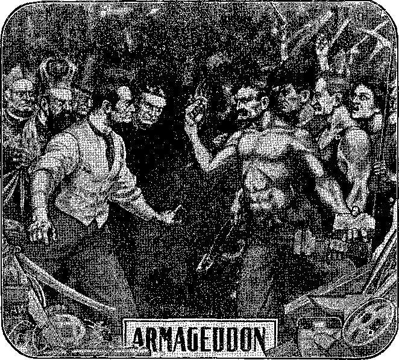
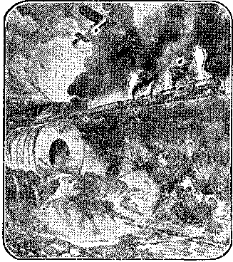

BROOKLYN, N . Y.
Vol. IX.
No. I
THE WORLD ON FIRE! A BETTER DAY COMING
Fire Used as a Symbol in the Heavens and Symbolic
"All the earth shall be devoured with the fire of My jealousy. For then will I turn to the people a pure language, that they may all call upon the name of the Lord, to serve Him with one consent.”—Zephaniah 3'. 8, 9.
THE symbolic language of the Bible is in common use amongst the people. For instance, the Bible for 2,500 years has been telling about the great, war in Europe, and has likened it to a consuming fire which will eventually destroy completely our present civilization; and, behold! the Editors of our great Journals are writing freely about the great conflagration now raging in Europe, and oiir honorable President, similarly, has declared the world is on fire and our nation will be fortunate if we do not share in the conflagration also.
The time was when our forefathers read the Bible without realizing that It contained figures of speech and symbolisms such- as we use in our ordinary conversation. Hence the mistake that was so generally made of supposing the Bible to teach that our earth is to be literally consumed with literal nre. Not' merely Ad vexi cists have so believed and taught, but all the creeds of all the denominations contain the same teachings—that at the Second Coming of Chirst the world Is to be burned up. This erroneous thought has helped to blind God’s people to the general teachings of the Bible that at the Second Coming of Jesus the world will enter upon the grandest epoch ever—styled by St. Peter, “Times of Restitution”—literally, years of Restitution—Acts 3:19-21.
Practically all the creeds of Christendom—Methodists, Baptists, Presbyterians, Lutherans, Roman Catholics. Episcopalians, all—teach this doctrine, that the world is to be burned up. The Bible, all the while, has been telling us plainly “The earth abideth forever,” and again, “God formed not the earth in vain; He formed it to be inhabited.” (Ecclesiastes 1:4; Isaiah 45:18.) Our earth has never yet been inhabited, and is not even fit for habitation, as a whole. Millions of acres are, as yet, untouched; and other millions are desert wilds. The Bible tells us that “the wilderness shall blossom as a rose,” "solitary places shall be glad,” and “streams shall come forth from the desert,”—in Messiah’s Day.—Isaiah 35:1-10; 11:1-9; etc.
Messiah’s Day Draws Near.
Messiah’s Day is the great Sabbath Day, a thousand years long, which is to follow the Six Great Days of man’s Work Week.
These six Days—six thousand years “-ended forty-four years ago; consequently we are forty-four years into the great Seventh Day. This accounts to us for the wonderful inventions, developments and increase of knowledge, wealth and blessings of every kind which have come to the world during these forty-four years. Sewing machines, labor saving agricultural machinery, human comforts and conveniences, electric lighting, and motors, automobiles, electric railways, shortened hours of labor, with the passing of the “sweat of face” which was a part of the curse. And our scientific men in full accord with the Bible, though unaware of it, are telling us
“WHERE ARE THE DEAD?”
This article was published in a recent issue of THE BIBLE STUDENTS MONTHLY, Vol. 5, No. 3. The interest aroused and the great demand for copies of it have . been remarkable. A sample copy will be mailed to any one free upon receipt of post-card request.
Bible as in the Language and Literature of Our Day—Symbolic Earth, Symbolic Seas to be Symbolically Burned—The New Heavens and the New Earth.
that we are just on the eve of the most wonderful scientific discoveries that will still further enrich and bless the world.. The Bible explains that all this increase of knowledge was foreknown of the Lord and purposed; and that He is taking away the veil of ignorance and superstition which so long has hindered us.
Winds of Strife, Earthquakes of Revolution, and Fire of Anarchy, the
Bible Program.
The same Bible which foretold the present great war in Europe, and symbolically pictured it as a letting loose of the four winds of Heaven to the injury of the earth, points us to the next stage of this great trouble, symbolically styling it an earthquake, and declaring that it will be “a great earthquake, such as was not since men were upon the earth, so mighty an Aarthauake and so great.”—Rev. 16:18.
The new heavens and earth represent the new order of things of Mes-
THE DAY OF VENGEANCE.
This earthquake of revolution is what we might naturally have expected, even without the Divine Message on the subject. It is scarcely supposable, but that this terrible war, bringing only sorrow, misery, distress and death to all the parties engaged, will be a disappointment to them all. Chagrin and discontent will be general. The heaviness of the taxation to meet the interest on great debts will be burdensome. Many agree with us that the people will never submit to such taxation, that neither the interest nor the principal will be paid, and that this will bring revolution; for the wealthy people, holders of the bonds, will attempt to enforce payment. Britain, the richest of the nations, has a stream of $500,000,000 a year income from India; but this great amount will not be even one-half the interestcharge on her enormous debt of $22,-000,000,000, as estimated by the lord of her Treasury. And what is true of
Britain in this respect, is still more true of the other nations which have no such incomes.
But the great climax of the trouble that is before them, the Bible represents as a symbolic fire following the great symbolic earthquake of revolution. Fire in Bible language symbolically represents destruction—in this case the destruction of the symbolic earth, political, financial, social and the religious heavens. This the picture which St. Peter gives us, saying, “The Day of the Lord will come as a thief in the night; in the which the heavens shall pass away with a great noise, and the elements shall melt with fervent heat; the earth also, and the works that are therein, shall be burned up; ... the heavens, being on fire, shall be dissolved. . . . Nevertheless we, according to His promise, look for new heavens and a new earth, y-herein dwelleth righteousness.”—2 Peter e: io, 12, j.<>.
Christ Will Make All Things New.
siah’s Kingdom. The new heavens will be the glorified Church, consisting of Jesus and His Bride class, which He has been selecting from the world .during the past nearly nineteen centuries ■—a Royal Priesthood. The new earth will be the new social order of things under the control and direction of the new heavens. The great King declares, "Behold, I make all things new.” (Revelation 21:1-5.) There will be no patching of present institutions, but a clean sweep of them by the fire of God’s anger, which will precede the establishment of the new heavens and the new earth wherein only that which is righteous, equitable, just, true, will be recognized.
Equally symbolic is the statement that then "there will be no more sea.” In the symbolic language of the Bible "sea” represents the restless masses of mankind, while the “earth” represents the social order, or structure, and the "mountains” represent. the kingdoms or governments. When the new order of things shall have come into power, Socialists, Anarchists and others, discontented with the present order of things—symbolically represented by the sea—will be no more; for the new order of things will fully and more than meet their desires and expectations. "I will shake all nations, and the desire of all nations shall come.—Hag. 2:7.
In the symbolic language of th® Bible, all the mountains will be brought low, and the valleys will be exalted. These statements do not refer to th® literal earth, to the literal mountain® and literal valleys any more than t© the literal sea, but signify the great revolutionary processes by which th© new order of things will be inaugurated. The high ones will be brought down, the humble ones will be lifted up, and general human equality will be established—along the lines of righteousness, however. Some of the rich and favored of the present time may at first feel greatly discontented; but so surely as they are just men, oj are amenable to the instructions along the line of justice, they will eventually come to see, appreciate and rejoice in the new Divine order of things, whick will be for the blessing of all th® families of the earth.
“The Fire of That Day.”
St. Paul prophetically pointed dow&. co our nay, and styled it “that evil day.” He urged God’s people, saying, "Take unto you the whole armor of God, that ye may be able to withstand in the evil day.” (Ephesians 6:13.) We are already in this evil day; and already thousands of Christians have fallen away from faith in the Lord They did not have on the whole armor of God. They were unprepared. Th© day of the Lord came upon them as ® thief (1 Thessalonians 5:2) and as ®. snare.—Luke 21:35.
It sounds paradoxical to say that w® are living in the most wonderful time in the world’s history, and yet that it is the evil day that the Apostle mentions. This is so because we were in such darkness that, coming into such great light suddenly, many have lost their mental balance. Only those prepared by the armor of the Lord's Word have been enabled to stand.
Notice how fully and distinctly th® Apostle has pictured our present distress. He says, pointing exactly to our time, “The fire [of that Day] shall try every man’s work of what sort it is. (1 Corinthians 3:13.) He is not referring to the world, but to the people of God. He proceeds to explain that God’s people build upon the Rock Christ Jesus, but that each should b® careful to build his faith structure of the proper material—the gold, silver and precious stones of the Divin® promises. He tells, however, that som® do build otherwise—with wood, hay and stubble of human traditions and philosophies and speculations.
The Apostle declares that the fire of this Day shall try, or test, all these faith structures; and that those built of human philosophies and the creeds of the Dark Ages will be consumed as wood, hay and stubble would go down before a fire. But those who have built their faith upon the promises of God’s Word will not suffer loss in this fiery ordeal. The Apostle further intimates that those who suffer the loss by fire may, if they still abide upon the Rock Christ Jesus, themselves be saved so as by fire; for to such the fire will really prove a profitable experience in that it will sweep away the errors and leave them opportunity for building up a holy faith on the Divine promises.
The trouble with the majority is that, while trusting in Jesus, they have had a false faith, a faith built of human traditions and not of God’s promises. The reason they do not know what they believe is that their faith structure has been burnt down.
(Continued on 2d page, 1st column.)
LB. S. A„ Publisher.
j 13, 15, 17 Hicks St., Brooklyn, N. Y.
i Monthly—12c. a year. Single copies, 1c.
s An Independent, Unsectarian Religious Newspaper, Speciaiiy Devoted to the Forwarding of the Laymen’s Home Missionary Movement for the Glory of God and Good of Humanity.
Ministers of the I. B. S. A. render their services at funerals free of charge. They Also invite correspondence from those Sesiring Christian counsel.
’'Continued from first page.)
Earthly vs. Heavenly Wisdom.
The fire which, is consuming this crood, hay and stubble of human philosophy and tradition has emanated from our great schools and colleges. They have been inculcating what is termed Higher Criticism as respects the Bible, and this is merely a refined modern name for infidelity. They have fceen teaching also Evolution, which is as far from the teaching of the Bible as day is from night.
According to Evolutionists, Nature Is a great impersonal God, whose first production of life on the earth was in the form of protoplasm. After thousands of years, they say, an ambitious family of protoplasm evoluted and became tadpoles. For some thousands Of years the tadpoles reigned as an aristocracy on the earth; and then an ambitious family of tadpoles concluded to evolute and become frogs. Thousands of years later there arose an aristocracy among the frogs, which evoluted and became monkies. After Other thousands of years an aristocracy among the monkies evoluted and became college professors; and that is the attainment of our day. In answer to our queries they boast of their an-©estry and also of their posterity, telling us that, in perhaps a million years In the frtore they will live everlastingly in a representative sense in that their children will have evoluted to a condition of wisdom and discretion wherein they will not need to die.
Contrast this nonsense, the wisdom Of this world, with the Wisdom from Above, which tells us the opposite. The Bible declares that God made man in His own image, only a little lower than the angels; that He crowned man with glory and honor, and made him the king of the earth; that Adam became through disobedience a rebel against the Divine Law and consequently came under a death sentence; that God’s foreknovzledge had already arranged for this catastrophe, and, in &ue time, provided a Redeemer who gave His life to meet the penalty first Imposed on Adam and who thus redeemed Adam-and all his race from the penalty which was upon them—a death penalty, not an eternal torment penalty. Thus the Bible assures us that, unless Christ had died for our sins, there would have been no resurrection of the dead, and men would have been as extinct in death as a brute beast. But the Bible assures us that, “Since by man came death, by man [Jesus] came also the resurrection of the dead. For as in Adam all die, even so in Christ shall all be made alive. But every man in his own order. ”—1 Corinthians 15:21-23.
The Bible tells us that the whole world is asleep in death during the long night of sin, darkness and superstition. The Bible tells us that as soon as the Church shall be complete and glorified with her Redeemer and Lord, the Sun of Righteousness will arise to scatter all the ignorance, superstition and sin of the world of mankind. The Bible tells us that for a thousand years Christ and His elect Church in glory will be Priests, Kings and Judges for the very purpose of uplifting Adam and his race out of their fallen, vain, sinful, weak condition back to the image and likeness of God, as at first. The Bible tells us that the earth shall be filled with the Lord’s glory; and that, as His footstool He will make it glorious. Paradise lost will be Paradise restored world-wide. The Bible tells us that those who will either refuse or neglect the opportunities of Messiah’s Kingdom will be destroyed in the Second Death—absolutely, “as natural brute beasts ”-—2 Peter 2:12.
The Fire of Our Text.
When we see the glorious blessings that are just at hand, the fact that they shall be entered upon through the doorway of trouble, seems the less Important. Our Socialist friends urge us to join with them, saying, “We ar® tired, of preaching about what God will do by and by; come and join us; be Socialists and do something now.” We reply that, we appreciate the fact that many Socialists are intelligent and that many of them are sincere; but in our opinion their wisdom is the wisdom of this world, which, from God’s viewpoint, is foolishness. They are not able to bring about the great Changes which they desire,” and if they could bring them about, they would be unable to maintain those changes so long as sin and death reign in this world. What the world needs is what God has provided, a Savior and a Great One, able to save to the uttermost—completely.
We tell our socialist friends that we know they will succeed beyond their expectations. Like Samson of old they will pull down the house not only upon others, but alsp upon themselves ■—“There shall be a Time of Trouble such as never was since there was a nation,” as our Lord Jesus foretold.™ Matthew 24:21.
We should follow the course directed by God’s Word, and urge God’s people everywhere to do the same—• to wait upon the Lord to bring about the great change of dispensations which He has purposed and promised. Hear the words of the Prophet: "Therefore wait ye upon Me, saith the Lord, until the day that I rise up to the prey; for My determination is to gather the nations, that I may assemble the kingdoms, to pour upon
SIGNS OF THE
KING’S PRESENCE
“Bui Who May Abide the Day of His Coming?—And Who Shall Stand When He Appeareth? for He Is Like a Refiner’s Fire and Like Fuller's Soap.”-—Malachi 3:2.
THE words of the Prophet give® in our text refer to the close of the present Gospel Age. It is the same Day prophesied by the Apostle Paul when he declared, “The fire of that Day shall try every man’s work of what sort it is.” (1 Corinthians 3:13.) It is the Day of which the Apostle Peter wrote so graphically when he said that in that great Day of the Lord the heavens should be on fire and the elements should melt with fervent heat, and that the earth and all the works therein should be burned up. (2 Peter 3:10.) It is the Day of which the Prohnet Zephaniah, spoke when he said that in the great Day of the Lord all the earth should be devoured with the fire of God’s jealousy. (Zephaniah 3:8.) Isaiah, Jeremiah, and many of the faithful Propnets of Gud prophesied of this Day. The Prophet Daniel was instructed by the angel of the Lord that in that Day there should be a “Time of Trouble such as never was since there was a nation.” (Daniel 12:1.) Our Lord Jesus Himself verified this prophecy, and added that never afterwards should there be such a time.-—Matthew 24:21, 22.
The Scriptures call this Day “th® Day of the Lord,” “the Day of Jehovah,” “the Day of God,” “the Day of Christ,” “the Day of Vengeance,” “that great and notable Day,” etc. It is the Day in which the Old Order is to perish and the glorious New Order is to be ushered in. In foretelling this Day, both the Prophets and the Apostles speak of the class which will stand in this Day when all others shall fall. St Paul says that everything which can be shaken down will be; and that only the Kingdom which will then be set up, and which cannot be shaken, will remain. (JIebrews 12:25-29.) The present order of society—the nominal church systems, financial institutions, political institutions— all—will go down in this time of trouble.
During this Gospel Age many who have not been Christians have associated themselves with the Church. The civilized world of today call themselves “Christians,” in contradistinction to the nations, which they call “heathen,” though from, the Scriptural standpoint they are all heathen —Gentiles. Among all these various nations we find many religions, whose devotees claim that they have consecrated -themselves to God. But the touch-stone by which these claims may be tested is the Word, of God. See Galatians 1:6-9. To the true Church of Christ alone will God. give the Messianic Kingdom. Some who really have Christ and His work of sacrifice as their foundation will be saved, but at the expense of all their works, their character-structure, which the “fire” of this Day will consume. The tare class tn the. nominal churches will be bundled and “burned,” not as Individuals, but as professed Christians; that is to say, their professions will be seen to b® Without foundation.
"Saved as Through Fire.* h The ones who are upon the Rock Christ Jesus, the only true Foundation, are those who have accepted Jesus as their Ransom-sacrifice, and have consecrated themselves wholly them Mine indignation, even all My fierce anger; foi’ all the earth shall be devoured with the fire of My jealousy.” The fire of God’s jealousy, or anger, is not literal fire. It will be the fire of anarchy, by which He will permit humanity to destroy its grandest achievements of civilization.
That the fire of God’s jealousy is not literal fire is demonstrated by the next verse, which declares that, after this fire shall have done its work, then the Lord will turn unto the people a pure Message that they may all call upon the name of the Lord, to serve Him with one consent. If the whole earth were devoured with a literal fire, there would be no people left to receive God’s pure Message and turn to Him. But after the fire of anarchy and of trouble shall have spent itself, and after the New Dispensation shall have been inaugurated, the “light of the knowledge of the glory of God” will fill the whole earth. Eventually every knee will bow and every -tongue confess, to the glory of God the Father. — Habakkuk 2:14; Philippians 2:10, 11.
to God through Him. All these "have been called in one hope of their calling.” (Ephesians 4:4.) Many of these will fail to make their calling and election sure and will suffer great loss. They did not build properly upon this Foundation, Christ, a structure of gold, silver and precious stones of Truth and of whole-hearted loyalty to the Lord. They will suffer the loss of the Kingdom, and through much tribulation will take a lower place, before the Throne—not rulers, but honorable servants of the ruling class. All who have been begotten of the Holy Spirit must, as we have shown elsewhere, either be born upon the spirit plane or lose life altogether. Those who prove wholly faithful will be born Divine beings. Those not wholly faithful, and who miss the great “prize,” though not denying the Lord that bought them, will be born spirit beings of a lower order.
The tribulations which characterize the end of this Age will thoroughly awaken these careless ones. Certain special tribulations, we understand, have come to those who were of this class all through the Age. But apparently a larger number of these are living now, at the close of the Age; and these must go through “the great tribulation,” and must wash their soiled robes and make them white in the blood of the Lamb. (Revelation 7:9-17.) They will have a blessed portion after their purification, but far less glorious than that to which they were called.
The Apostle Paul in his writings lays special emphasis upon the fundamental importance of correct doctrinal teaching. It made no difference whether Paul or Apollos or even an angel from Heaven taught anything, it must be in harmony with the foundation doctrines which had been given them by the Lord. (Galatians 1:6-12.) He assured the Church that what he had taught them was from God; and that even if an angel should bring them another gospel, it would be a proof that such angel had deflected from loyalty to the Lord. That. Jesus Christ died to secure the Redemption-price for Adam and his race is the foundation doctrine of the Church, which was received from Jesus Himself and from His faithful mouthpieces and which was shown in the Divinely given types of the Law. Whoever taught this fundamental truth faithfully was a real help to the people of God. Yet even such a teacher might help them to build, even on this proper foundation, a. faith and character structure which would not stand the tests of the great. Day of the Lord..
UnvulnerabHlty of the Trjxth.
This prophecy of our text still in process of fulfilment. The “refiner’s fire” is even now doing its work, and thousands and tens of thousands ar® falling ail about us. The Prophet’s query is very pertinent at this time. We see that the false teachings which have come down, during these many centuries since the Apostles fell asleep have made humanity incapable of reasoning correctly on religious subjects. In the past we have had our own experiences along this line. Whenever anything religious was mentioned we seemed to lose owr common sense. Now we have our fear of the dread penalty of using our reason. We have come back to the teachings of Jesus and the Apo& ties, and we find them gx-and an® beautiful. '
Those who have been teaching errors will soon be ashamed (Isaiah 66:5), while the fire of this Day will only manifest the Truth to ail. ' N© power, no tongue, no pen, can suo. cessfully contradict the Truth, the great Divine Plan of the Ages. It is strong before its enemies and befox*® all who make assaults upon it, an® ere long the folly of its foes shall, bs made known to the whole world, “There shall be weeping and gnas& ing of teeth.”
Significance of the Presence of the. King.
The coming of the King to possess His Kingdom will mean a personal as well as a national and a church examination, judgment and treatment. It will mean, when the Kingdom is fully inaugurated, the suppression of vice in a manner and to a degree never attempted by any earthly reformer. There will be no license'to do evil in any form. The only liberty granted will be liberty to do right. It is no wonder that so few experience joy at the proclamation of the return of earth’s rightful King to reign’ To many it will mean the loss of their present advantages over their fellowmen. To many it will mean the prohibition and cutting off of sins now indulged in and enjoyed.
Nevertheless, both the King an@ the Kingdom are not only coming, but are here; and the present troubles and shakings in church and state, and the general awakening of the people are the results of influences emanating from that King and Kingdom. Though men know it not, it is the work of the Kingdom of God that is even now preparing for the wreck of all the kingdoms of the earth, that the way may be opened for the establishment of righteousness in the world, that men’s hearts may be humbled and prepared for the righteous Government which is to take control of earth. Worldly men cannot realize this; for this Kingdom cometh not with outward observation —with outward show and display. Therefore they cannot say, “Lo, here/’ or “Lo, there.”
In spite of the awful war now raging, growing fiercer and more deadly every day, these continue to hope for peace, trying to convince themselves and others that the trouble must soon be brought to an end, and that matters will then go on as formerly. They blind themselves to the true conditions and refuse to believe that God has determined to permit this trouble! to spread and involve th® entire world and to bring about the utter, overthrow of the Present Order of things. Selfishness, pride and lov® of money have closed their eyes. We give here an extract from a poem written . some years ago by a Christian minister, which forcefully describes present conditions and th® judgment of God which is now to b® visited upon the world for their lasting good:
“Woe to the Age when gold is god, . law a solemn jest,
That helps the boldly vile to crush tke noblest and the best!
When Mammon o’er cheap millions flings his gilded harness strong,
And drives them tame beneath his lask down broad highways of wrong;
While Truth’s shrill clarion down the sky peals faintly o’er the rout,
And dust and fumes of earth, and si® shut Heaven’s blest sunlight out!
Then look for lightning!—God’s red bolt® must cleave the stifling gloom,
In. righteous wrath to purge the world! m Sodom’s fearful doom!”
. But we are thankful that while the judgments of a righteous God against sin must come at this time, yet the ultimate results will be glorious, when the world will come forth chastened, subdued, purified by the awful baptism of fire and blood; when they shall come to see that sin, selfishness and corruption have wrought their legitimate outcome. Then mankind will be ready to cry to the Lord and to long for His deliverance, and He will be entreated of them and will lift them up and bless them.
But the coming of the King means much trouble and the general oveB turning of the kingdoms of this world which, while professing to be kingdoms of God, are really under th®
GREAT BATTLE in Ecclesiastical Heavens by Judge Rutherford Catholics, Episcopalians, Methodises. Baptists, Presbyterians, et al^ vs.
Price, 5c. Two dollars per 100. Adfcwt
I. Bo S. Brooklyn, N, X sontrol of the “prince of this world,” Satan, “the prince of the power of She air, the spirit. that now worketh in the children of disobedience.” (John 14:30; 16:11; Ephesians 2:2.) Xt means the shaking of society in a manner and to an extent never before inown, and so thoroughly that another shaking will never be necessary. (Hebrews 12:26, 27.) It means the breaking in pieces of the empires and governments of the world as a potter’s vessel. It means the passing away of the present ecclesiastical ^heavens,” and. the fall of many of its bright “stai’s.” At i resent the sunlight of the true G-ospel, and th® moonlight of the Law with its types and shadows, are obscured by the thick clouds of worldly wisdom. “The sun shall be turned into darkness, the moon into blood.”—Joel 2:30, 31.
While many would rejoice to see society relieved of many of its sel-ftsh, life-sapping ulcers, they seem to realize that so just and impartial a Judge as the Lord Himself might cut off _ certain long-cherished ' sins to which they desire to cling; , they fear to have their personal selfishness touched. And their fears are well-founded. He will bring to light all the hidden things of darkness, and correct and suppress private as well as public sin and selfishness. He will expose depths of corruption never before realized. He will make “Justice the line and righteousness the plummet; and the hail shall sweep away the refuge of lies, and the waters shall overflow the hiding place.” (R. V.) He will “bring down them that dwell on high, the lofty city [Babylon]. He layeth low, even to the dust.” He will bring down them who have “made lies their refuge.”—Isaiah 28:15, 17, 18; 36:5, 6.
Lift up Truth’s Glorious Banner!
It is written, that the Day of the
.AN APPALLING LACK
IN EVERY DAY LIFE
QREAT NEED OF AN AWAKENING ON SUBJECT OF JUSTICE.
^Awake to righteousness 'and sin not; for some have not the knowledge God. I speak this to your shame.”—1 Corinthians 15:34.
of
HIS exhortation is not addressed to the world of sinners, but to Christians, as are all of the Apostolic writings. If we were to translate the text a Ittle differently, it might better give the Apostle’s thought. For Instance, “Awake to a proper appreciation of justice. Do not sin against justice in your lives; for some have not a knowledge of God respecting justice, the principles of righteousness. And this is to your shame.”
We who are in the School of Christ recognize that the Lord is teaching us and is preparing us for a g~~t work in the future. The work of the Church
during the incoming Age is, according to the Bible, to be kings, priests and judges, to be God’s representatives in the Messianic Kingdom. As kings, they will be sharers with our Lord Jesus in the ruling of the world. As priests, they share in the work of healing, instructing and sympathizing with the world. As judges, they will administer justice, will give stripes or rewards to mankind, during the thousand years of Messiah’s Reign. Manifestly, therefore, it is proper that whoever hopes to be of these kings, priests
___________________ - judge us according to the imperfec-and judges should now attain the quali- tions of our flesh; for so long as we fications of heart and mind which will remain faithful, these blemishes are make him competent for the work; for covered with the robe of Chirst’s im-we may be very sure that God will not ' ’ ' ’ ’ appoint any who are not properly
(qualified. , „ „ ,
It is for this reason that God has been calling His Church out from the world during the last nineteen hundred years, and has been giving us the glorious instructions of our Lord Jesus and the Apostles and of the Law and the Prophets. All these things have been for our upbuilding in those Qualities of heart and mind which will fit as for the great service to which God Jhas called us. . .
But God is not testing His children according to their imperfect bodies; for He knows that we cannot do the things which we would. He is dealing
FREE LITERATURE!
Send postal-card request for free copies af this paper. Some of the interesting subjects you may have for asking are;
Spiritism is Demonism.
Where are the Dead?
The Rich Man in Hell.
Thieves in Paradise.
Distress of Nations Preceding Arma«
Sgeddon. „ a ,,
The Battle of Armageddon.
Clergy Ordination Proved Fraudulent, Lord would come as a thief and a snare upon the whole world, and that only God’s fully consecrated Church would be in the light and not be taken unawares. Many of the consecrated have been deceived by looking for the Heavenly King to come again in the flesh. They forgot that the only reason for His coming in the flesh at His First Advent was “for the suffering of death” as man’s corresponding-price; and that now He is highly exalted, a glorious spirit Being. “lie was put to death in flesh, but made alive in Spirit.” (1 Peter 3:18.) They forgot that the Apostle Paul also said, “Though we have known Christ after the flesh, yet henceforth know we Him [so] no more.” (2 Corinthians 5:16.) The true children of God are coming more and more to see how the Master comes at His Second Advent, and are not expecting to see Him in the flesh and with their natural eyes.
We who know that the King of Glory and His blessed Kingdom are the only remedy for the wrongs and woes of man should be pointing the groaning creation to this Kingdom, rather than to the poultices of their own contriving which can do no real good. Tell them the meaning of present world-wide conditions, and how, beyond the troubles now overspreading the world, will come the glorious Times of Restitution foretold by all the holy Prophets since the world began. Tell them that the death of Jesus was the Redemptionprice for the entire race of Adam, and that His return is for the purpose not only of delivering His Church, but to bind Satan and set free all his captives, including all who are in the graves, giving all who will an opportunity to come into the liberty of sons of God, under th© terms of the New Covenant, soon to be established.
with our spirits, our minds. Through the transforming influences of His Word, He is giving us a new mind; and it is this new mind which He receives into His family. This becomes the New Creature. (Romans 12:1,.2;
2 Corinthians 5:17.) We accept a new will, the will of God, instead of our own wills, and the Divine arrangements instead of our own plans and purposes. Thus God is dealing with us as His children, according to this new relationship into which we have come by faith and obedience; and through Christ our Lord we are reckoned perfect in God’s sight.
The Knowledge of God’s Will.
But how can we be perfect in will when our bodies are imperfect? We answer, as did the Apostle, “To will is present with me, but how to perform I find not.” (Romans 7:18.) He did not always succeed in carrying out his will for righteousness. So it is with every one who seeks to walk in the footsteps of Jesus. We all know how to WILL right, but how to DO right is the problem!
puted righteousness. Therefore we do
Gradually we learn that God will not our best to show our Heavenly Father that we are trying hard to do right in every act, word and thought. And since He expects every member of His family to have a perfect will, it becomes a personal question as to what is the will of God for us. So we seek to prove “what is the good and acceptable and perfect will of God.”
To prove what is God’s will means to come to a knowledge of His will, to demonstrate it for ourselves. If we are faithful, we are progressing in this more and more as the days go by. At first we had a little knowledge, and this we put into practise. As we grew in grace and in knowledge, we became better acquainted with the will of God; and it was for us to put this increased knowledge into practise also. This knowledge of the will of God we obtained, not in any supernatural way, but through the study of the Bible.
Whoever has come into the family ©f God has given up his own will and accepted instead God’s will. Whoever has not given up his own will to the Lord is not His child. As the Apostle declares, “If any man have not th® Spirit of Christ, he is none of His.*8
(Romans 8.9.) The Spirit, of Christ is the spirit of full surrender to the Father’s will; and as we come to this same condition, we give up our own wills and take instead the Divine will. This we do because it is the proper course for all who desire to follow in our Redeemer’s steps, and because our own wills have proved to be unsatisfactory to ourselves. Our minds and our bodies are so imperfect that we have frequently gotten into difficulty through doing our own will. Therefore we are glad to know and to do the will of God, especially since we see that it is so gracious a will.
During the present time it is the will of God that His children shall have trials, difficulties and polishings, in order that these experiences may develop in us a God-likeness of character, a crystallization of character, that will render us fit to be used of God in the great work which He has appointed to the Lord Jesus, that we might thus become joint-heirs with Jesus Christ our Lord in that Heavenly Kingdom which is designed of the Father for the blessing of all the families of the earth.
Justice First, Then Love.
Sometimes Christian people see the doctrine of love in the Bible, and forget that there is a lesson which precedes love. This primary lesson is the one to which we draw your attention today. It is the lesson of justice— righteousness. Our text really signifies, “Awake to justice!” We must all learn to distinguish right from wrong and to practise what is just, right. Justice is righteousness.
“Thou shalt not bear To do so would be an
wrong, unjust, false witness.’8 injustice.
Thus we see
that the Law of God
The Law of God was given to the Israelites at Mount Sinai to show what justice means. They were not asked to do anything more than justice. “Thou shalt not kill,” said the Law; for to take another’s life is wrong, except when God’s own Law demands it. “Thou shalt not steal.” To do so is given to the children of Israel amounted to this: “Thou shalt love the Lord thy God with all thy heart, soul, mind and strength; and thy neighbor as thyself.” To do justice to your neighbor as you wish that neighbor to do justice to you is the essence of the Law of God given to the Jews for their treatment of others.
Did God give this same Law to the Church? Yes, so far as the spirit of the Law is concerned. God’s Law is over all of His creatures. But during the Law Dispensation there was a special Law Covenant wnicn God liad made with Natural Israel. No others have ever been under that Law Covenant. The Jew who could keep that Law perfectly could live forever; and, having everlasting life at his command, he might have the opportunity of becoming a part of that great antitypical Spiritual Israel which was to bless all the families of the earth. This our Lord Jesus did. Moreover, in His statement of the Divine Law of Spiritual Israel, He “has magnified the Law and made it honorable,” by showing how far-reaching and comprehensive are its requirements.
No intelligent person will question the propriety of dealing justly with every one in the world. This subject has many ramifications in all the affairs of our daily life. The principle of justice enters into every transaction, even the most trivial. It applies not only to our dealings with the world at large, but with every member of our own family. The principle of justice must be recognized with our own as well as with others. If all might get this thought of the Golden Rule firmly fixed in the mind, if each one could awake to righteousness, to justice, the whole world would be revolutionized.
Practical Application of Justice.
If this principle of justice were recognized and followed, men would not be shooting one another today over governments and by individuals. Th® general excuse for violating the Golden Rule is, “It would never do for us to ; grant to others what we would expect1 for ourselves; for others 'would take advantage of us; they would not do their part; they would not recipro= cate.” Say the British, “It would not do for us to practise the G-olden Rui© toward the Germans; for we do not know what they would do to us.” Th® Germans advance the same kind of argument.
in Europe. On the contrary, they would be doing something better, something good one toward another, just as they would wish others to do toward them. But men are not living up to this standard of righteousness, of justice. It is entirely ignored by
“STUDIES IN THE SCRIPTURES”!l£«i2!<~1
Address? international Bible Students Association,, Brooklyn, N. V.9 U. 1. At
This course of conduct is not th© fear of God, but the fear of man; it ignores the. fear of God. God sayss that if Christians are afraid of men and of nations and of what these may do, we are carnal, are living accenting to the flesh, are like the unbeliev® ing world. How shall we who have come into relationship with Godl through the Lord Jesus Christ, we wh® have given our lives to Him, do under such circumstances? Shall we say that we fear to trust this principle of justice in our lives, that we do not dare to carry it out in every wordB thought and act? Are we afraid t© trust God and to obey Him?
God did not say that we were to observe the Golden Rule whenever others observed it toward us, and t@ ignore it whenever others failed t@ observe it toward us. On the contrary we are to practise it on every occasion^, regardless of what others do. Then we shall know that all things shall work together for good toward us, because we shall be in line w-ith God and His arrangements. He has power to ; overrule in all of life’s affairs. Th® । very least that we must do is to giv® J justice to one another; and to do so ' will upbuild our own characters. i
Whoever is violating the principle ’ of Justice, the Golden Rule, in his home or in the Church of Christ or in business or social relations should, if he is a Christian, examine the matter earnestly and prayerfully, and “awake to righteousness [justice], and sin. ; not.” Thus to do violence to justice i® ! sin; and so far as our knowledge goes9 J it is a sin that prevails everywhere^ i Many have not a proper appreciation of this fact. They do not see that justice is the very foundation of all character, of all right living. It is th® foundation of the Throne of God. | (Psalm 89:14.) In vain does any on® practise ’love to his fellow creatures or even toward God while he is at th® same time violating the principle of justice toward that one. Only after we have rendered justice are we at liberty to practise love toward another. Then we may do as much as we ar® able along the line of love. Justic® । first, love afterwards.
Responsibility of God’s People.
Those who are children of God ar® expecting shortly to be made th® judges of the world. As the Apostl® says, “Do ye not know that the saints shall judge the world?” (I Corinthians 6:2, 3.) Moreover, God is seeking now to develop in our hearts and lives, in our characters, those principles which He desires. Therefore, unless we ar® just in our very hearts, unless we appreciate this principle of justice and rejoice to .practise it, we shall not be fit for the Kingdom. We should not be unjust even to an animal. Every creature has its rights; and we should give each creature the rights which belong to it. The results are with God. Thus doing, shall we not be preparing our minds, our hearts, for the glorious condition which the Lord has in stor® for His faithful children?
We are not to think that the King-dom of God is to be given on the basis of mercy or favor. There will be neither mercy nor favor in connection with the bestowal of the Heavenly re- i ward. God shows mercy in connection with our sins and the weaknesses ; against which we are striving; but He ( will not allow in that Kingdom one in- > dividual whose character is not suit- ! able. Those whom He approves for ! joint-heirs and rulers with our Lord Jesus must represent the principles of righteousness and must know how to apply those principles now. Whoever is not disposed to justice to such an extent as to be willing to suffer loss rather than do an injustice will not ; have a share in the Kingdom. J
NOW ^2.0 POST
ONLY PAID
for the entire .set ot six books, together with on© year’s subscription to the semi-monthly journal. The Watch Tower. Order today.
“Divine Plan of the Ages”. 416 pg “The Time Is at Hand”...432 “ "Thy Kingdom Come”.....432 “
“Battle of Armageddon”...720 “ “Atonement Between God
and Man” ......... 600 “
“The New Creation”........ 816 “
A NEW DAY DAWNS
AS DARK NIGHT ENDS
EARTH’S LONG NIGHT OF WEEPING—THE MORNING OF THE GOLDEN AGE HERE AT LAST-PROOFS ON EVERY HAND.
Watchman, what of thp night? . . . The Morning cometh, and a night
' also.”—Isaiah 21:11-12.
THE literature of the world shows that intelligent men have refused to believe that the Divine Purpose in the creation of our earth has yet been attained. Continually we find references to “the Morning of the New Day,” to the “Golden Age,” etc., etc. Yet not to the longings of men’s hearts, but to the promises of our God, do we look for real instruction on this subject. The Bible most emphatically declares that the entire period of human history thus far has been a night time.
The Prophet David explains, “Weeping may endure for a night, but joy cometh in the Morning.” (Psalm 30:5.) Thus prophetically we are assured that there will be a Morning whose glory, brightness and blessings will fully compensate for all the dark shadows of the Night time past. Our text is another prophecy along the same line. The message of the Lord is, “The Morning cometh!” St. Paul writes that up to his time the world had been under a reign of Sin and Death, not under a Reign of Righteousness and Life.
All of the Apostles assure us that It is not God’s purpose to permit the reign of Sin and Death to continue forever. They tell us that the Divine Program is that Messiah, in the Father’s appointed time, will take to Himself His great power and reign King of kings and Lord of lords— putting down sin and every evil thing, uplifting humanity and granting a Divine blessing where for six thousand years there has been a Divine curse. The Bible writers explain that this does not signify a change in the Divine Purpose, but that God had planned this thing in Himself from before the foundation of the world; and that although He had permitted Sin to enter and death to reign, He had made fullest provision for the Redeemer to die for our sins and eventually to become the Restorer and Life-giver to Adam and his race —to as many of them as will accept everlasting life on the Divine terms.
The Apostles tell us that during the “night time,” since Jesus’ death, God has been doing a special work— selecting from mankind a special ©lass, a saintly few—“the Church of the First-borns, whose names are written in Heaven.” These are not taken from any one nation or denomination. This “little flock,” to whom it is the Father’s good pleasure to give the Kingdom (Luke 12:32), is composed of all the saintly followers of Jesus, who walk in His steps in the narrow way during this Gospel Age. Their experiences are to qualify them for association with their Redeemer In His Messianic Kingdom. Their trials, their obedience and their sufferings for righteousness’ sake are to work out for these a far more exceeding and eternal weight of glory. Suffering with the Master for the Truth’s sake in the present life, they are to share His glory, honor and immortality in the life to come. They are to be His joint-heirs in His Kingdom.— Galatians 3:29; 2 Timothy 2:11, 12.
The Kingdom Sunrise Nearing.
Amongst the Lord’s people even, few yet understand that Jesus distinctly teaches that the “Sun of Righteousness,” who will arise with healing in His beams and whose light will constitute the New Day, will be composed of the Church of Christ glorified—changed from human to Divine nature by participation in the First Resurrection. Gur Lord Jesus tells this in the parable of the Wheat and the Tares. He declares that in the end of this Gospel Age all of the wheat class will be gathered into the Heavenly Garner, and that “then shall the righteous shine forth as the SUN in the Kingdom of their Father.”
How wonderful, how beautiful, how appropriate are the word-pictures of the Bible! No one but the Lord knew of the great Divine Plan. No one but Him, therefore, could give these pictures of its development. In various terms and figures of speech the Bible attempts to give us a little glimpse of the glorious conditions of that Day. The New Day and the Kingdom will be “the desire of all peoples.” In that Day the righteous will flourish, and evil-doers will be cut off from life. During that thousand-year Day of Messiah’s Kingdom, Satan is to be bound, “that he may deceive the nations no more.” (Revelation 20:2, 3.) Landlordism will come to an end; for “They shall not build and another inhabit; they shall not plant and another eat the fruit thereof,” but “shall long enjoy the work of their hands.” —isaiah 65:22.
Wonderful Foregleams of Light.
The most wonderful thing that the Bible tells us respecting that New Day is that it will bring great intelligence and enlightenment to every creature. The- light of the knowledge of the glory of God shall fill the whole earth as the waters cover the face of the great doon. (Isaiah 11:9; Habakkuk 2:14.) “And they shall teach no more every man his neighbor, and every man his brother, saying, Know the Lord; for they shall all know Me, from the least of them unto the greatest, saith the Lord.” (Jeremiah ’ 31:34.) Ultimately every knee shall bow and every tongue shall confess, to the glory of God.—Phil. 2:11; Isaiah 45:23.
ALL IN ONE MAN’S LIFE,
What an enthusing prospect the Bible holds out before the Church and before as many of the world as can exercise a measure of faith to believe! The world indeed sees to some extent that great blessings are coming; but just what these are and how they are to come mankind know not; for “the world by wisdom knows not God.” (1 Corinthians 1:21.) The worldly wise have rejected the Bible, and do not trust it as a Revelation from God. Thus the wise are caught in their own craftiness.—1 Corinthians 3:19.
The Dawning Began in A. D. 1874.
Let us not stop now to discuss the darkness of the Night and its weeping. Let us awake, and take note of the fact that the dawning of the New Age is already here. For the past forty-two years we have been in it and enjoying many of its blessings. But those blessings came so stealthily— “like a thief in the night”—that few recognized their import. Some few have been calling attention to the fact that we have been in the Millennial dawn ever since 1874.
Bible chronology quite clearly teaches that the six thousand years since Adam’s creation have ended— six great Days of a thousand years each, mentioned by St. Peter—“a Day with the Lord is as a thousand years.” (2 Peter 3:8.) Now the great Seventh Day, also a thousand years long, has commenced. We have been enjoying its dawning. It is to be a grand Day! What wonder if the dawning be remarkable!
It may surprise some to be told that the past forty-two years mean more to the world in increase of education, increase of wealth, incease of all manner of labor-saving inventions and conveniences, increase of safe-guards and protections for human life, than did all the six thousand years which preceded them—many times over. The world has probably created a thousand times as much wealth during these forty-two years as during the entire six thousand years preceding. Yet these changes have come so gradually that few have noticed them.
Fulfilment of Prophecy Everywhere.
Forty-two years ago man labored from sun to sun; today we are rapidly approaching an eight-hour day. F^rty-two years ago nearly all the labor of the world was done with sweat of face; today it is nearly all accomplished by machinery. Forty-two years ago the sewing-machine was just reaching perfection; today it is everywhere indispensable. So with the thousand household conveniences. So with nearly all of our sanitary and plumbing arrangements. So with farming implements. Reapers and binders, mowers, automobiles, gas engines, etc., etc., all belong to these forty-two years.
Prophecies respecting streams in the desert and the wilderness blossoming as the rose are having fulfilment— not miraculously, but in harmony with the Divine order of an inereased intelligence amongst men. Artesian, wells are being drilled, irrigating canals constructed, . not only in the western part of the United States and Canady, but also in far-off Mesopotamia. The results are marvelous. Land previously not worth fencing is valued at $500 per acre today. The increase of knowledge has been supplemented by governmental arrangements for the distribution of that knowledge amongst the people. The soils of various localities are being analyzed at public expense; and tillers of the soil are given knowledge as respects what kind of fertilizers are required to bring satisfactory results.
Under these conditions it does not surprise us to know that as much as 156 bushels of corn have been raised to one acre, and that 600 bushels of potatoes and over are not an uncommon record. Is not the Bible being fulfilled? Who can dispute these facts? What do they signify? We answer that they exactly corroborate the Divine declaration which describes our day: Many shall run to and fro; knowledge shall be increased; the wise of God’s people shall understand; and “there shall be a Time of Trouble such as never was since there was a nation.”—Dan. 12:4, 10, 1; Matt. 24:21.
Increase of World-Wide Discontent.
We are in the Morning of our text. Ah, what a glorious Morning! How changed the human conditions from those of our grandfathers! How thankful the whole world should be! Paeans of praise should be rising from all the people of the favored lands of civilization; and helping hands should be outstretched to carry the same blessings to heathen lands. But is it so? Are the people happy and rejoicing? Are they appreciative of the New Day?—of the gifts of Divine Providence?
No! In proportion as the blessings of God have come, the discontent of humanity has increased; and unbelief, not only in respect to the Bible as the Divine Revelation, but in many instances in respect to the very existence of an intelligent Creator. Notwithstanding the great increase in the world’s wealth, and the fact that there are some noble souls who are using their share of the wealth in a praiseworthy manner, nevertheless the general operation of the law of selfishness prevails; and all the legislation which has been enacted, or which can be enacted, fails to restrain the giant insti tutions—corporations—of our day, fail?: to hinder them from exploiting' the masses in the interests of the com paratively few.
LESSON OF THE LILIES
‘Consider the lilies of the field, how they grow.”—Matthew 6:28.
FEAR and anxiety are amongst cate structure of the flower, created the most serious foes of our by an Infinite Hand.
human family. They wear upon The lesson seems to be that al-the gray matter of the brain; they though the flowers may be in an unproduce nervous exhaustion and are favorable environment, unable to do very injurious to health. For those for themselves or to take any anx-who would seek to walk in the Di- ious thought in the matter, never-vine path which God has marked out theless, God’s providence has so ar-for the Gospel Church, fear and anx- ranged for them that they thrive and iety are special hindrances. The become very beautiful. These lilies Savior had this fact in mind when did not look up and wish that they he spoke thus to His disciples. He might become great trees nor wish would have His followers to be with- that they might climb up higher in out worry, to be restful of heart, the world and nearer the sun, as do But he would not have them be with- the vines. On the contrary, they out carefulness. There is a careful- were content with the lot chosen for ness which is entirely proper, yea, them by their Infinite Creator.— necessary, on our part, but not this Matthew 6:30.
extreme worry—this inability to en- The Lesson of Trust imperative,
joy the blessings of the present mo- And so God’s people are to take
ment because of thoughts, fears, re- a lesson from the lilies. They too .specting tomorrow. When the Apos- are to be content with the Lord’s tie said (Philippians 4:6), “Be care- arrangement for .them.
ful for nothing,” he was not referring “Content whatever .lot I see, to a proper care and sense of re- Since ’tis my God that leadeth me." sponsibility, but to an anxiety which in. proportion as we approximate would rob the soul, of rest and peace, this condition it will give us peace and which would' indicate a lack of and rest of mind. We. are not to faith in .the Lord and in His care worry, and not to be slothful, but are for His people. The word rendered to be diligent, “fervent in spirit serv-“careful” here is from a Greek word ing the Lord,” doing with our might meaning over anxious. what our hands find to do. When
In giving a forceful lesson to His doing this, we are to be content and disciples on trustfulness in God, the trustful that He will work out all Master used the illustration of the things for our good. He wishes us lilies of the field. The lilies of Pal- to learn this lesson of trust, estine are quite common—rather a Those who neglect to learn this small flower, many of them red. lesson will be unprepared for the They persist, live, grow, notwith- great work God has in mind for our standing that no special provision is future under Messiah’s Kingdom, made for their cultivation, and that God will not have any in that King-they are trodden down by those who dom who, are not full of trust, pass through the fields. Yet they As the flowers flourish under God’s develop and mature and blossom, and providential care, so are all of His have an exquisite organism, which people to flourish—to grow in knowl-microscopic examination shows is edge and beauty of spirit, in beauty very beautiful. Jesus declared that of character. And this is not aceven Solomon in all his glory was complished by some great things that not arrayed like one of these. There they do, but by the spirit in which is a perfection in the texture of a they meet the little things, all the flower that is wonderful. The finest experiences of life. God’s people are to Clothing cannot approximate the deli- grow steadily, though unobtrusively.
Did God know all these things? What will He do about them? WiO He bring in the Millennial blessings and risk that men shall take foi granted that they have won the secrete of nature by their own wisdom and perseverance, and forget God entirely*:
The Dark Night Already Settling.
According to the Bible, God fore knew the conditions of our day we are now entering them; and in our text He gives a key to the situation— elsewhere in the Scriptures made very plain. Through the Prophet, God tell® of the Dark Night coming—after the Morning Dawn had been well. ushered in—a dark storm-cloud just at sunrise.
Bible students see this great Time of Trouble already beginning in the letting loose of the winds of strife in Europe. In the light of the Bible they perceive that the result of this present war will be the great awakening of the nations; an increased knowledge and discontent amongst the people.
The next phase of the Trouble, according to the Bible, is to be the “great earthquake, such as was not since men were upon the earth, so mighty an earthquake, and so great.” (Revelation 16:18.) This is not a literal earthquake, but a symbolic one—revolution. Then the third phase of the calamity —the darkest of all—will be the symbolic fire of anarchy, which will utterly destroy our present civilization. Then, in the midst of that most awful Tim® of Trouble, Messiah, the great King, will take His great power and will exercise it, with the result that the raging waves of the sea of human passion will all be quieted, the fires of anarchy will all be extinguished, and the Reign of Righteousness and Peace will begin.
Cannot we see the wisdom of th® great Creator’s Program? He has determined to permit mankind to convince themselves of their own im-potency, of their need of a God, and of the fact that there is a God, and that His glorious purposes for humanity are revealed in His Word. Ah, it is n® wonder that the Bible speaks of that revelation of the Lord as the “still small voice of God,” speaking to mam kind through Messiah’s Kingdom! No wonder the Lord declares that “then He will turn to the people a pure Message, that they may all call upon the: name of the Lord, to serve Him wit^ one consent!”—Zephaniah 3:8, 9.